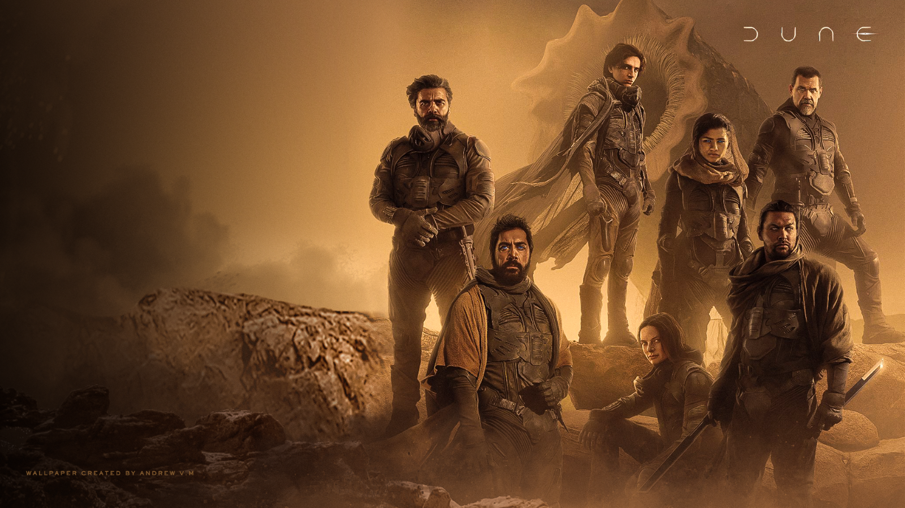
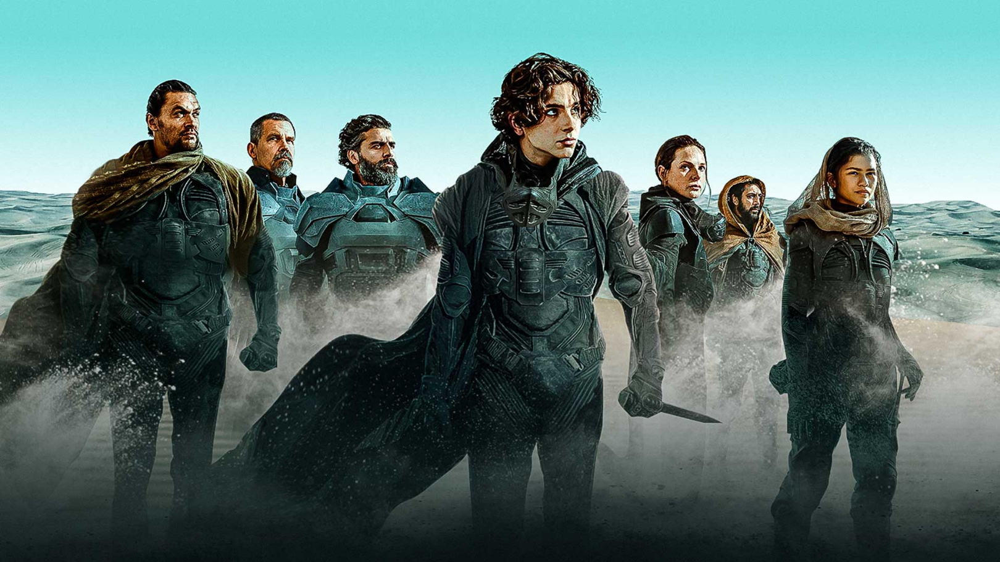
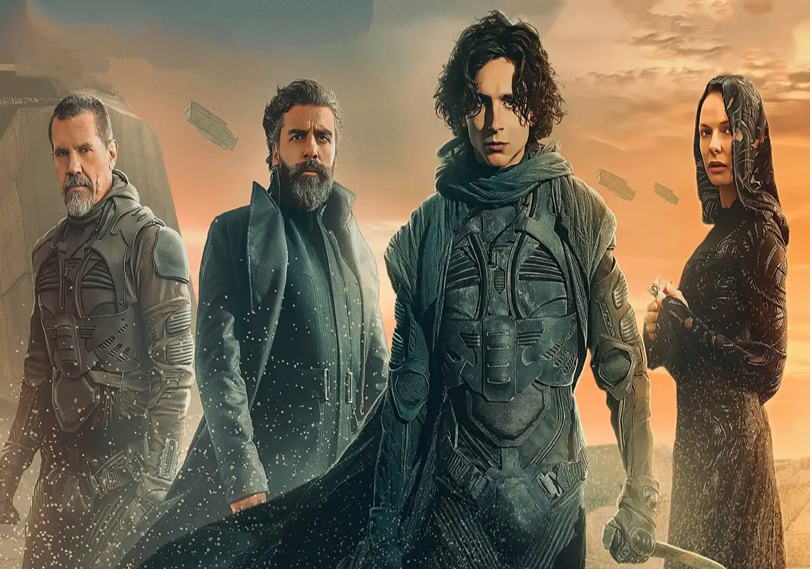
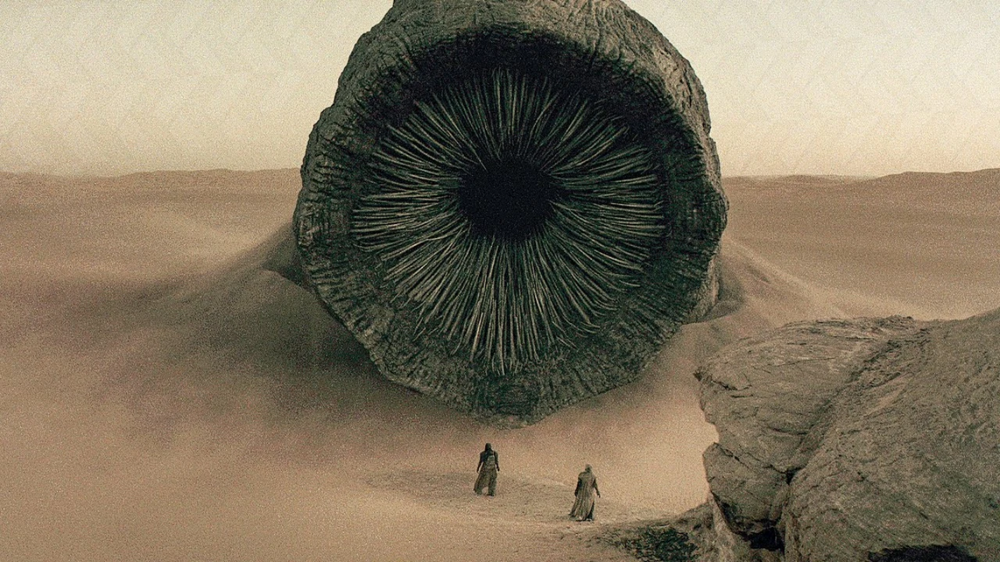
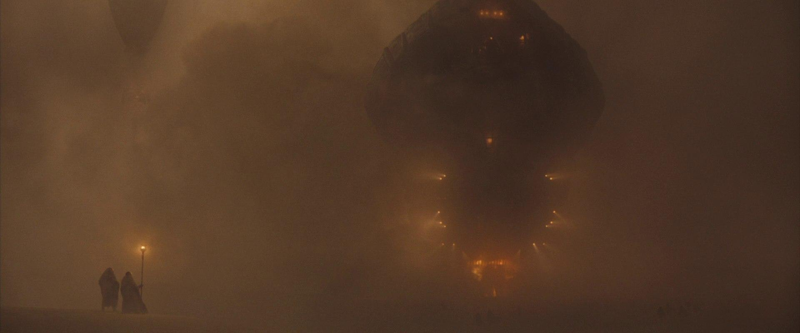
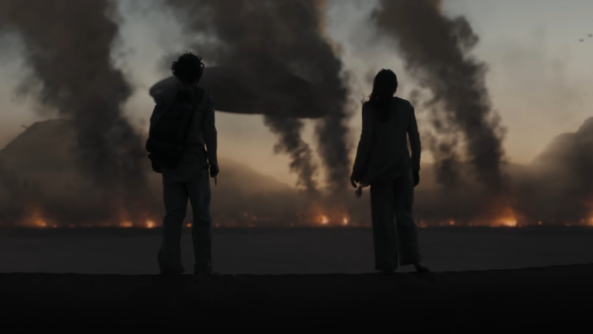

No futuro distante da humanidade, o duque Leto Atreides aceita a administração do perigoso planeta deserto Arrakis, a única fonte da substância mais valiosa do universo, a especiaria conhecida como "Melange", uma droga que prolonga a vida humana e fornece níveis acelerados de pensamento. Embora Leto saiba que a oportunidade é uma armadilha intrincada por seus inimigos, os Harkonnen, ele leva sua concubina Bene Gesserit, Lady Jessica, seu filho e herdeiro Paul, e os conselheiros mais confiáveis para Arrakis, também conhecido como Duna. Leto assume o controle da operação de mineração de especiaria, que é perigosa pela presença de vermes da areia gigantes. Uma amarga traição leva Paul e Jessica aos Fremen, nativos de Arrakis que vivem no deserto profundo.





